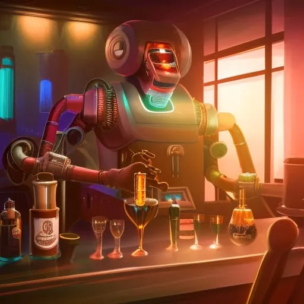

"Niraxus: Nova nada"
Chapter 6: "Piće s kapetanom"
Nakon što je prekinuo tučnjavu u sobi za rekreaciju, narednik Taylor se vratio u svoje odaje za spavanje. Dok je prolazio kroz bar, ugledao je kapetana Patela kako sjedi sam za šankom. Podignula je pogled i pozdravila ga, pozvavši ga da joj se pridruži na piću. "Taylor, kako bi bilo da mi se pridružiš na piću?" rekao je kapetan Patel. "Volio bih kapetane, hvala", odgovorio je narednik Taylor kad je sjeo pokraj nje. Robot barmen, po imenu "Zoltron", pozdravio ga je i pitao što bi želio popiti. Narednik Taylor naručio je isto što i kapetan, čašu Jaltorian viskija. "Ovaj Jaltorian viski je nešto posebno, zar ne Taylor?" rekao je kapetan, podižući svoju čašu. "Da, jest. Mislim da nikad nisam imao nešto slično", odgovorio je narednik Taylor, otpivši gutljaj. Dok su razgovarali, kapetan je primijetio da je narednik Taylor na ivici. "Je li sve u redu, Taylor? Djeluješ malo nervozno", upitao je kapetan. Narednik Taylor je na trenutak oklijevao prije nego što je odgovorio: "Borba ranije, samo me podsjetila na neke loše stvari koje su se dogodile u prošlosti." Kapetan je vidio da nerado govori o tome, ali nakon još nekoliko pića i nježnog uvjeravanja, otvorio se. "Bilo je to tijekom rata s izvanzemaljcima Kaltor", započeo je. "Rat je započeo zbog teritorijalnog spora oko vrijednog resursa pronađenog u obližnjem sustavu. Bio sam dio bitke na njihovom rodnom planetu Kaltor Prime. Bilo je to prije deset godina, 12. jula 2290." Kapetan je pozorno slušao dok je narednik Taylor detaljno opisivao bitku. Govorio je o intenzivnim borbama koje su se odvijale na planetu, pri čemu su obje strane koristile naprednu tehnologiju i oružje. Ljudi su koristili konvencionalno oružje poput oružja i projektila, dok su izvanzemaljci Kaltor imali energetsko oružje, napredne štitove i mogućnosti putovanja bržima od svjetlosti. Najmoćnije oružje koje je Kaltor imao bio je masivni energetski top koji je mogao uništiti cijele gradove. "Bilo je brutalno", rekao je narednik Taylor, glasom punim emocija. "Bili smo brojčano nadjačani i naoružani. Ali borili smo se zubima i noktima, odlučni zauzeti planet." "Konačno smo uspjeli probiti Kaltorovu glavnu bazu i uništiti njihovo primarno oružje, ali ne bez velikih gubitaka. Izgubio sam mnogo prijatelja tog dana." Kapetan mu je utješno položio ruku na rame. "Jako mi je žao, Taylor. Mora da ti je bilo teško." Zoltron je slušao u tišini, njegove robotske oči uprte u narednika dok je govorio. "Bio je to težak rat, ali je na kraju doveo do sporazuma između čovječanstva i civilizacije Kaltor. Bila je to teško izvojevana pobjeda, ali je na kraju vrijedilo." Dok su razgovarali, kapetan i narednik Taylor popili su čaše Jaltorian viskija i naručili još jednu turu. Nastavili su raspravljati o ratu i različitim izvanzemaljskim civilizacijama na koje su naišli tijekom svog putovanja. Kapetan je pozorno slušao, nestrpljiv da sazna više o iskustvima svoje posade. Kako je noć odmicala, smijali su se, pričali priče i nazdravljali svojim pobjedama. Viski i društvo pomogli su naredniku Tayloru da opusti živce i osjetio je prijateljstvo s kapetanom i Zoltronom kakav dugo nije osjetio. Dok su se opraštali i vraćali u svoje odaje, narednik Taylor nije mogao a da ne osjeti zahvalnost za slučajni susret u baru. Prošlo je dosta vremena otkako je počeo govoriti o ratu i bilo je dobro razgovarati o tome s nekim tko ga razumije. Znao je da će misija pred njim biti teška, ali s kapetanom i njegovom posadom uz sebe, bio je uvjeren da će uspjeti. Dok je narednik Taylor ulazio u svoju spavaću sobu, skenirao je svoju karticu i vrata su se otvorila. Ušao je unutra, osjećajući učinke jaltorijanskog viskija koji je pio s Kapetanom i Zoltronom. Brzo je skinuo uniformu i srušio se na krevet, zatvorivši oči i ispustivši uzdah. Ali kad je počeo odlutati, čuo je glas. "Bok, naredniče", rekao je poznati glas. Otvorio je oči i ugledao desetnicu Rodriguez kako sjedi na rubu njegova kreveta, s lukavim osmijehom na licu. Narednik Taylor je sjeo, trljajući mutne oči. "Kaplare, što radite ovdje? I kako ste uopće ušli?" "Oh, ja imam svoje načine", odgovorila je uz smijeh. "I mislio sam da bi ti možda dobro došlo društvo nakon one teške noći u kuhinji." Narednik Taylor je odmahnuo glavom, i dalje pokušavajući shvatiti što se događa. "Ne znam, kaplare. Prilično sam umoran i samo se želim malo odmoriti." Ali kaplara Rodrigueza nije dao odvratiti. Nagnula se bliže, a tamna joj je kosa padala oko ramena. "Hajde, naredniče", rekla je tihim glasom. "Znaš da želiš ovo. I mogu učiniti da ti se isplati." Narednik Taylor je na trenutak oklijevao, ali viski i pogled na zategnuto latino tijelo kaplara Rodrigueza bili su dovoljni da ga pokolebaju. Počeli su razgovarati i očijukati, a prije nego što je shvatio, pio je sve više i više viskija. Dok su nastavili razgovarati, narednik Taylor se zatekao kako joj se otvara, pričajući joj o tučnjavi u kuhinji i sjećanjima koja su se vratila na rat s Kaltorom. Kaplar Rodriguez je pozorno slušao, njezine tamne oči uprte u njegovo lice. Naposljetku, dok je viski tekao i noć je odmicala, prepustili su se svojim željama i vodili ljubav. Dok su nakon toga ležali zajedno, narednik Taylor nije mogao a da se ne zapita što će jutro donijeti. Ali za sada je bio zadovoljan time što se izgubio u trenutku iu rukama kaplara Rodrigueza.